Guitar List


.png)
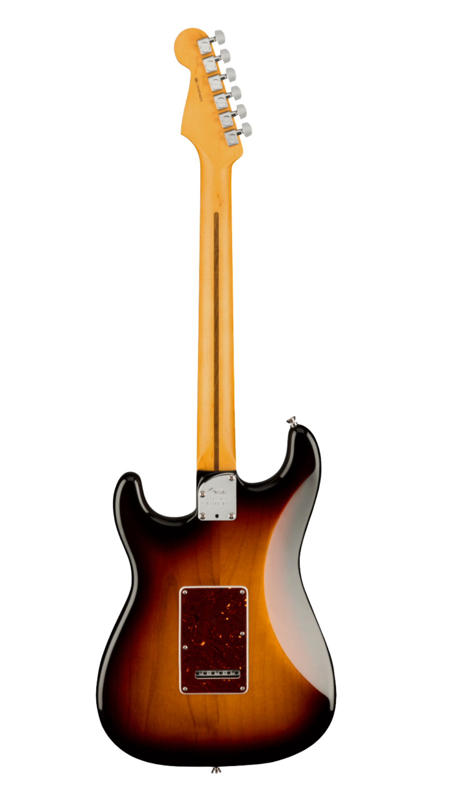
American Professional II Stratocaster
Model: #0113900700
Specs:
- Three V-Mod II single-coil Stratocaster pickups - Upgraded 2-Point Tremolo with Cold-Rolled Steel Block - Deep "C"-shaped neck profile with rolled fingerboard edges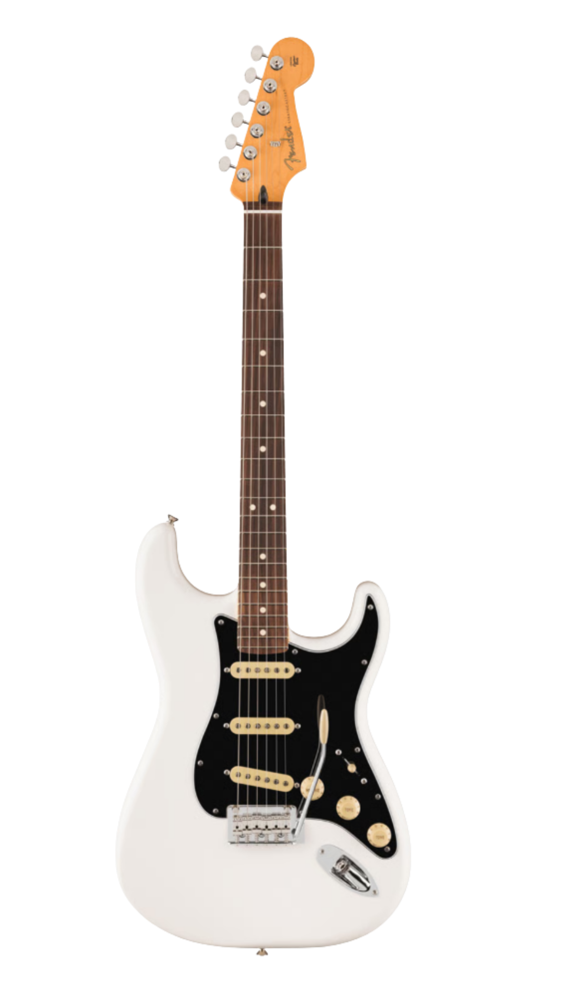
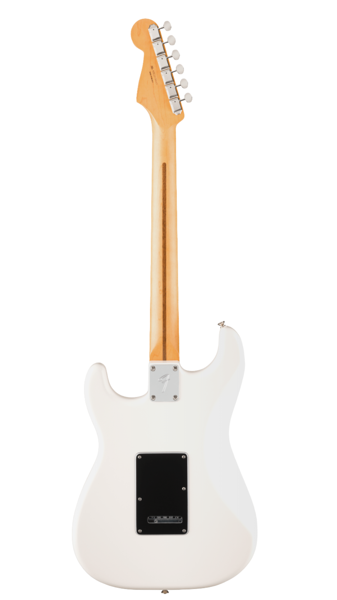
Player II Stratocaster
Model: #0140510515
Specs:
- Contoured Alder, Chambered Ash or Chambered Mahogany Body - Modern "C" Neck Profile - 9.5"-Radius Maple or Rosewood Fingerboard with Rolled Edges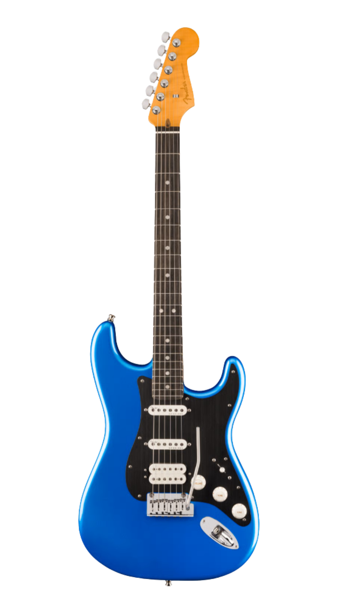
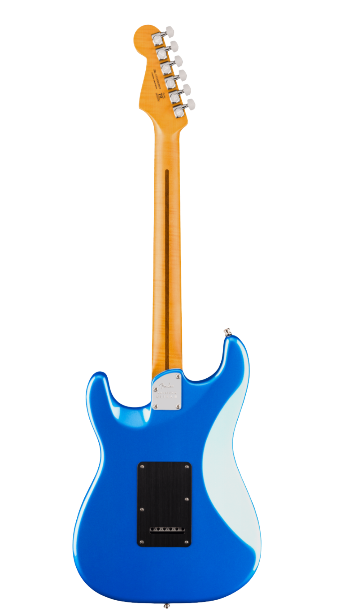
American Ultra II Stratocaster® HSS
Model: #0119151776
Specs:
- Select Alder Body with Ultra Contours and Sculpted Neck Heel - Quartersawn Maple Modern “D” Profile Neck - 10"-14" Compound Radius Ebony or Quartersawn Maple Fingerboard with Ultra Rolled Edges and Luminlay Side Dots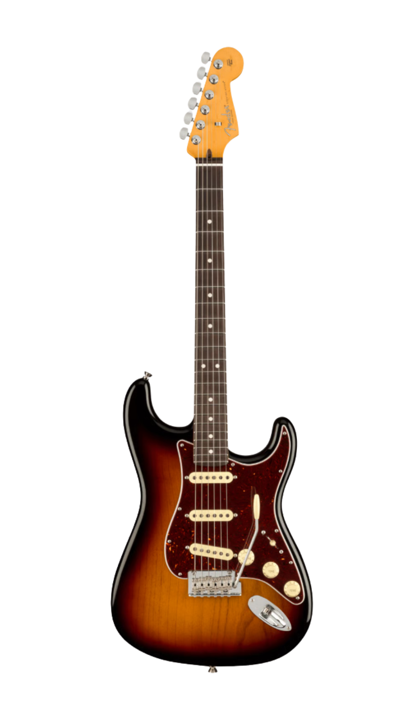
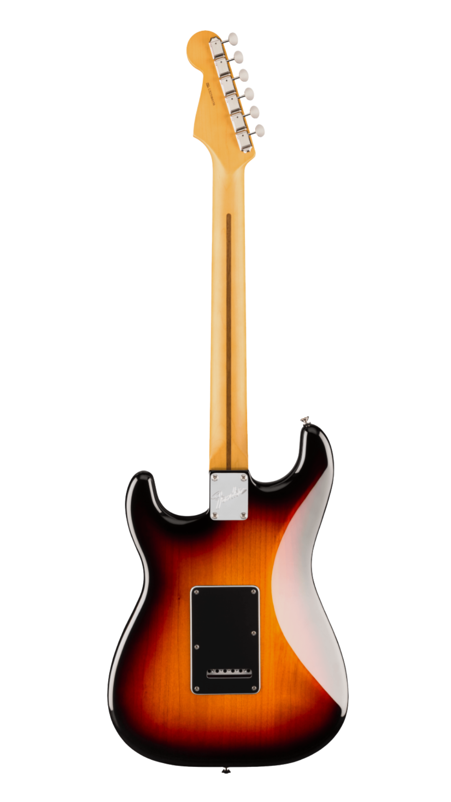
American Professional Classic Stratocaster® HSS
Model: #0114952300
Specs:
- Alder Body - Coastline™ '57 Stratocaster® pickups and Coastline™ humbucker - Modern "C"-shaped neck with 9.5"-radius fingerboard and Medium Jumbo frets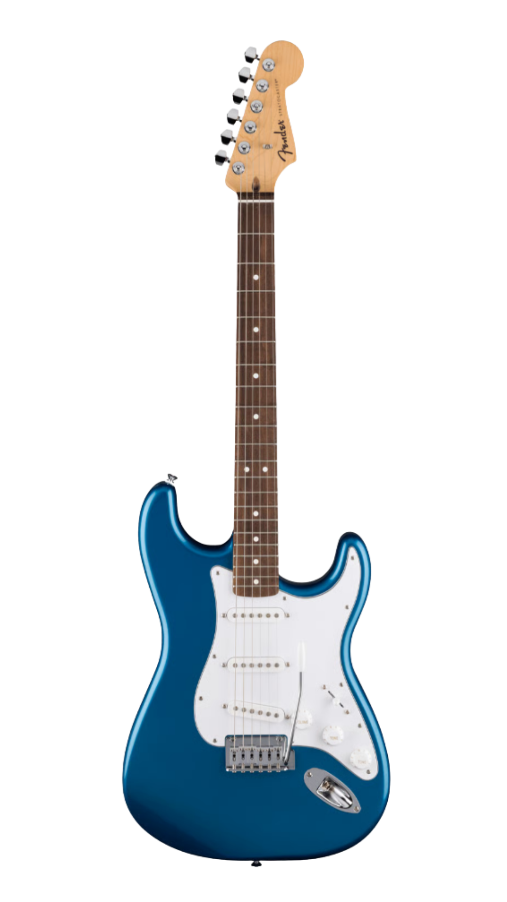
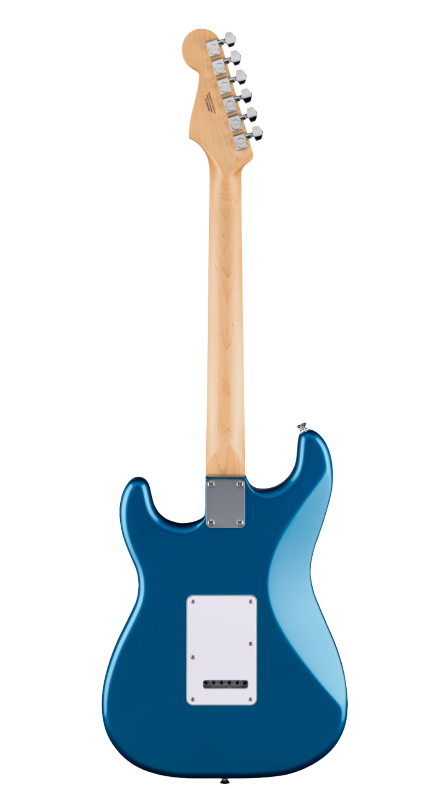
Standard Stratocaster
Model: #0266240560
Specs:
- Poplar body with gloss finish - Fender Standard ceramic single-coil Stratocaster pickups - 2-point synchronized tremolo bridge with satin chrome saddles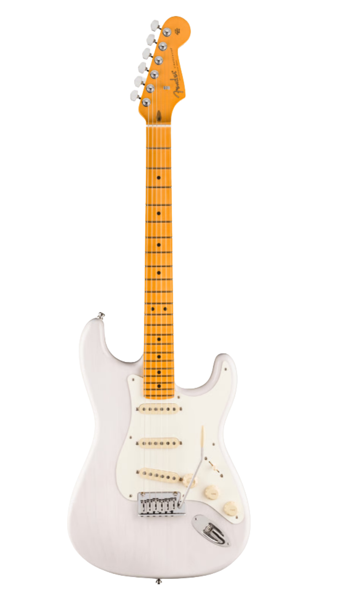
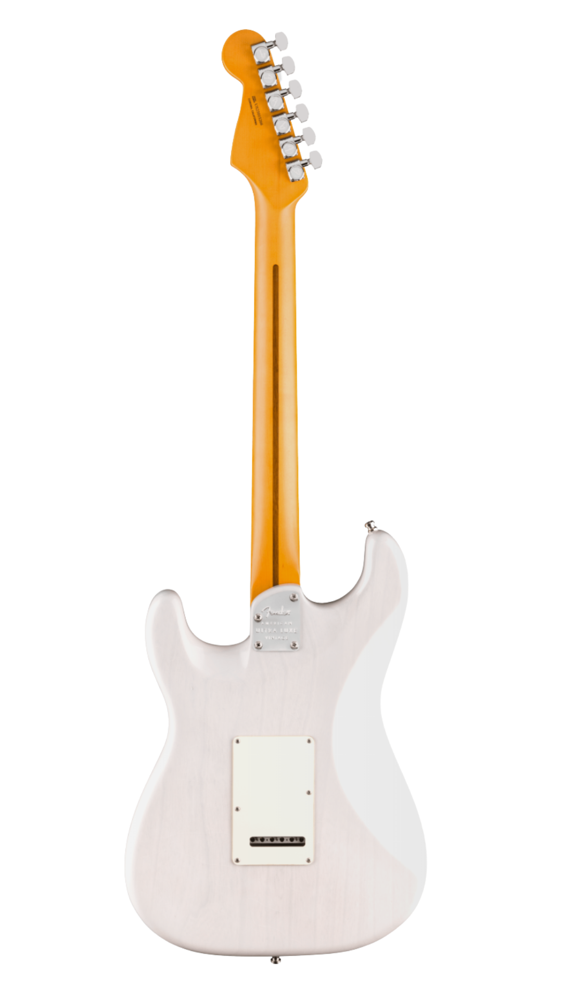
American Ultra Luxe Vintage '50s Stratocaster
Model: #0118212801
Specs:
- Heirloom™ Nitrocellulose Lacquer finish - Pure Vintage ‘57 Strat® Single-Coil Pickups, Advanced Electronics and S-1™ Switching - Stainless Steel Frets